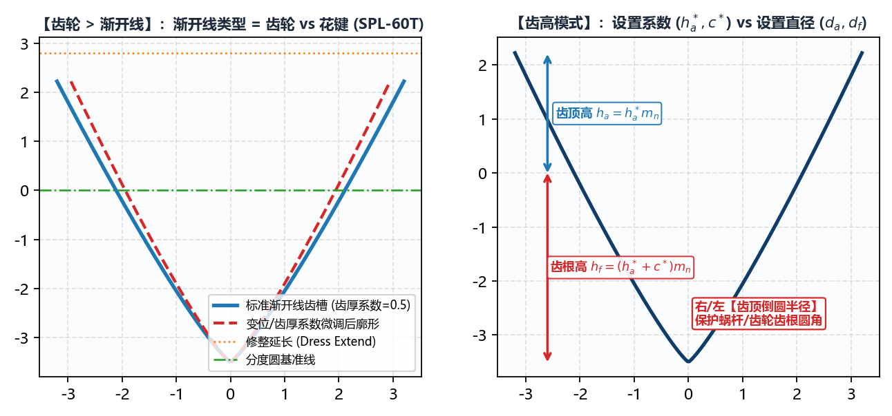

5.4 渐开线齿轮与花键
绘图工具 -> 齿轮 -> 渐开线 用于生成标准或变位直/斜圆柱齿轮及渐开线花键（如 SPL-60T）的端面齿槽 DXF。
渐开线类型 与 齿高模式

齿轮（默认）：开放齿高模式选择：设置直径：直接输入齿顶圆直径（da）与齿根圆直径（df）；设置系数：输入无量纲齿顶高系数（ha*）与顶隙系数（c*）由公式自动推算。
花键：面向 DIN 5480 / GB/T 3478 花键，固定按齿顶圆直径与齿根圆直径控制边界（隐藏齿高模式）。
参数配置表
| 参数名称 | 单位 | 工程含义与设置要点 |
|---|---|---|
法向模数 |
mm | 齿轮或花键法向模数（> 0） |
齿数 |
正整数 | 总齿数（如 SPL-60T 填 60） |
法向压力角 + #6bb1aa |
° |
齿轮常取 20，花键常取 30 或 37.5；右侧青绿框分别微调右/左齿面角度 |
螺旋角 + 螺纹旋向 |
° |
直齿/直花键填 0；斜齿轮填分度圆螺旋角并选 右旋/左旋 |
变位系数 + #6bb1aa |
无量纲 | 设计法向变位系数（标准填 0），右侧青绿框可微调磨深 |
齿厚系数 + #6bb1aa |
无量纲 | 默认 0.5；用右侧青绿框微调公法线 Wk 或跨棒距 M |
齿高调节 |
mm/系数 | 填入 da/df 或 ha*/c* |
修整延长 / 齿顶倒圆半径 |
mm | 齿顶以外延伸余量与砂轮齿顶（齿槽根部）右:/左: 圆角半径 |
保存文件 |
路径 | 目标端面 .dxf 路径 |
基本参数自动联动：伴随文件*-info.txt自动将DXF 齿形类型设为端面(左)，并写入分度圆直径与等效导程。